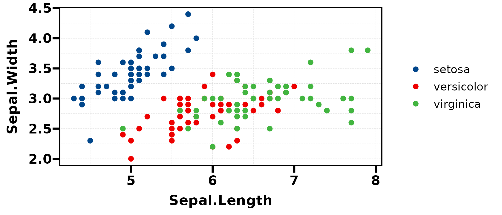
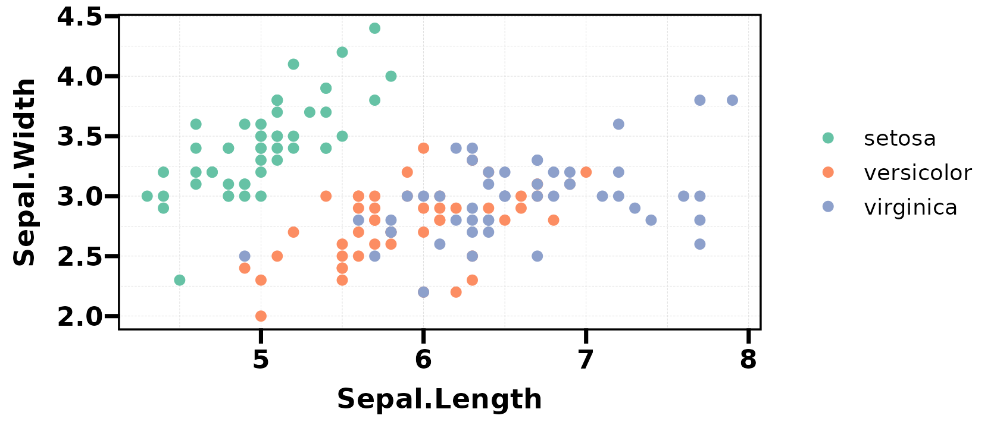
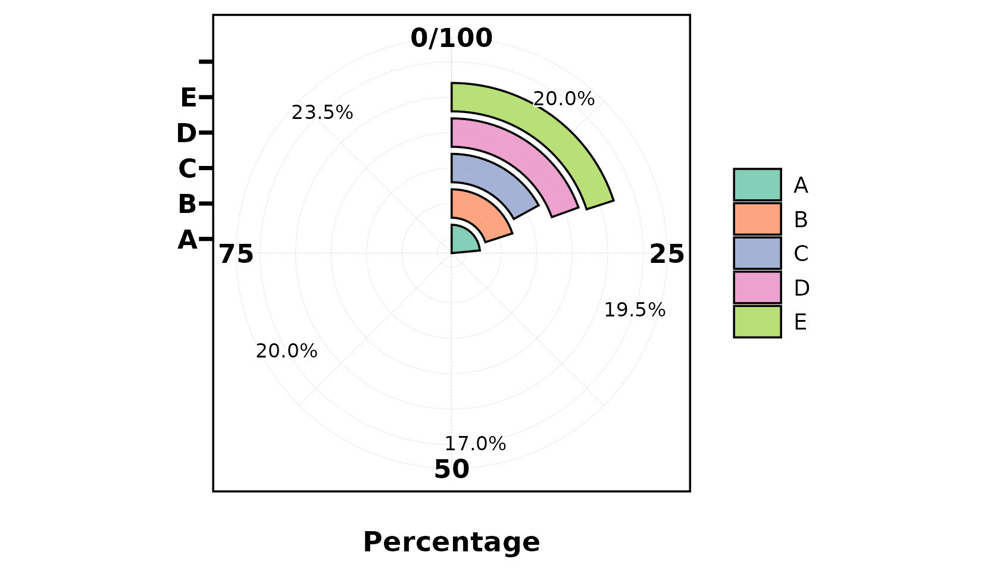
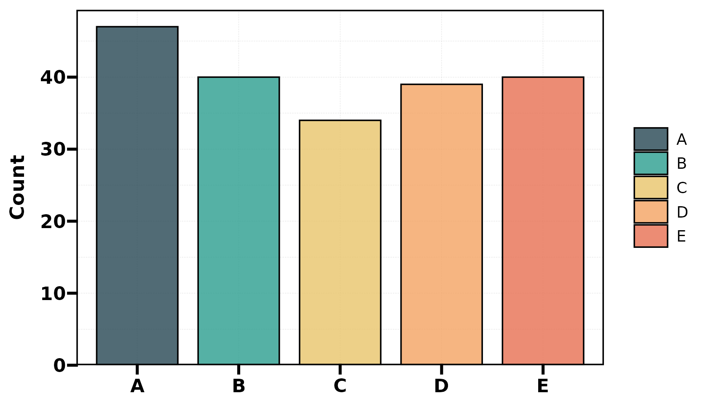
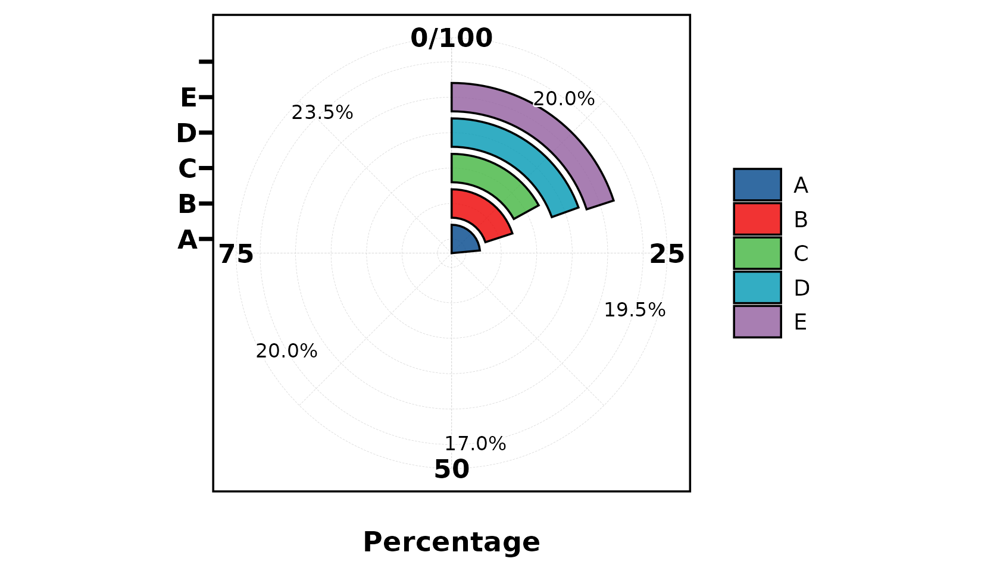

Overview
UtilsR provides a palette system with 256+ colour schemes from RColorBrewer, ggsci, viridis, rcartocolor, nord, and more.
Core components:
| Function | Purpose |
|---|---|
pal_lancet |
Default palette object (15 Lancet journal colours) |
palette_list |
Named list of 256 palettes |
pal_get() |
Extract colours from any palette by name |
pal_show() |
Visualise a palette as colour swatches |
pal_list() |
Browse all available palette names |
show_color() |
Display any colour vector in console |
as_palette() |
Create custom palette objects |
pal_lancet — Default Palette
The built-in default palette used by plt_cat() and other
plot functions:
as.character(pal_lancet)
#> [1] "#00468BFF" "#ED0000FF" "#42B540FF" "#0099B4FF" "#925E9FFF" "#FDAF91FF"
#> [7] "#AD002AFF" "#ADB6B6FF" "#1B1919FF" "#79AF97FF" "#DF8F44FF" "#6A6599FF"
#> [13] "#FCCDE5FF" "#80B1D3FF" "#0000FFFF"
as.character(pal_lancet[1:5])
#> [1] "#00468BFF" "#ED0000FF" "#42B540FF" "#0099B4FF" "#925E9FFF"
ggplot(iris, aes(Sepal.Length, Sepal.Width, color = Species)) +
geom_point(size = 2) +
scale_color_manual(values = as.character(pal_lancet[1:3])) +
theme_my()
palette_list — 256 Palettes
All palettes are stored in palette_list (internal data,
accessed via pal_get()):
# Browse available palette names
head(names(UtilsR:::palette_list), 20)
#> [1] "BrBG" "PiYG" "PRGn" "PuOr" "RdBu" "RdGy"
#> [7] "RdYlBu" "RdYlGn" "Spectral" "Accent" "Dark2" "Paired"
#> [13] "Pastel1" "Pastel2" "Set1" "Set2" "Set3" "Blues"
#> [19] "BuGn" "BuPu"
length(UtilsR:::palette_list)
#> [1] 256
pal_get() — Extract Palette Colours
Retrieve colours from any palette by name:
# Get 5 colours from "Paired"
pal_get("Paired", n = 5)
#> #A6CEE3 #1F78B4 #B2DF8A #33A02C #FB9A99
# Get 3 colours from "Set1"
pal_get("Set1", n = 3)
#> #E41A1C #377EB8 #4DAF4A
# Get 8 colours from "Dark2"
pal_get("Dark2", n = 8)
#> #1B9E77 #D95F02 #7570B3 #E7298A #66A61E #E6AB02 #A6761D #666666 Use in ggplot2:
ggplot(iris, aes(Sepal.Length, Sepal.Width, color = Species)) +
geom_point(size = 2) +
scale_color_manual(values = as.character(pal_get("Set2", n = 3))) +
theme_my()
show_color() — Display Any Colours
show_color(c("#FF6B6B", "#4ECDC4", "#45B7D1", "#96CEB4", "#FFEAA7"))
as_palette() — Custom Palettes
Create your own palette object with auto-display:
my_pal <- as_palette(c("#264653", "#2A9D8F", "#E9C46A", "#F4A261", "#E76F51"))
as.character(my_pal) # display as plain hex vector
#> [1] "#264653" "#2A9D8F" "#E9C46A" "#F4A261" "#E76F51"Use with plt_cat()
Palettes integrate seamlessly with plot functions:
set.seed(1)
df <- data.frame(Type = factor(sample(LETTERS[1:5], 200, TRUE)))
# Use named palette
plt_cat(df, "Type", type = "pie", label = TRUE, palette = "Set2")
# Use custom colours
plt_cat(df, "Type", type = "bar", stat = "count",
palette = c("#264653", "#2A9D8F", "#E9C46A", "#F4A261", "#E76F51"))
# Default (pal_lancet) — no palette argument needed
plt_cat(df, "Type", type = "pie", label = TRUE)